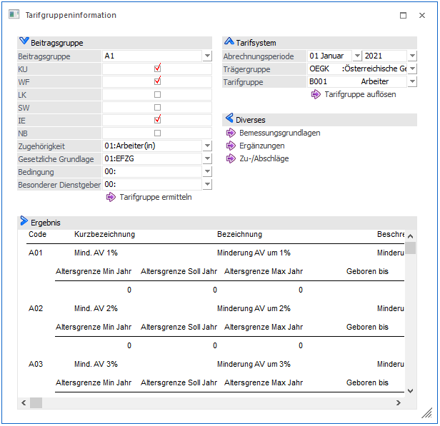

Im Menüpunkt
1 Stammdaten
1 Tarifsystem/Bemessungen
1 Tarifgruppeninformation
können viele Informationen rund um das Tarifsystem entnommen werden.

Beitragsgruppe
Dieser Bereich war eine Hilfestellung für die Umstellung der Beitragsgruppen auf Tarifgruppen zum Jahresabschluss 2018 auf 2019. So konnte mittels der Schaltfläche "Tarifgruppe ermitteln" jene Tarifgruppe ermittelt werden, die an Stelle der Beitragsgruppe benötigt wurde. Zu Informationszwecke bleibt dieser Bereich vorerst im Menüpunkt erhalten.
Tarifsystem
Ø Abrechnungsperiode
Hier kann gewählt werden aus welcher Periode und aus welchem Abrechnungsjahr die TASY Wert angezeigt werden sollen.
Ø Trägergruppe
Hier kann gewählt werden, von welchem Träger (ÖGK oder VAEB) das TASY angezeigt werden soll.
Ø Tarifgruppe
Hier kann eine Tarifgruppe ausgewählt werden, über die man weitere Informationen haben möchte.
Ø Tarifgruppe auflösen
Wird dieser Button gedrückt, wird im Bereich "Ergebnis" eine Übersicht über sämtliche Pflichtigkeiten und Möglichkeiten der im Feld oberhalb ausgewählten Tarifgruppe angezeigt.
Diverses
Abhängig von der bei Tarifsytem ausgewählten Abrechnungsperiode und Jahr, werden durch Anwahl der unten beschriebenen Schaltflächen jene Informationen angezeigt, die zum gewählten Zeitpunkt laut Tarifsystem gültig sind:
Ø Bemessungsgrundlagen
Wird dieser Button gedrückt, wird im Bereich "Ergebnis" eine Übersicht über die laut TASY gültigen Bemessungsgrundlagen angezeigt.
Ø Ergänzungen
Wird dieser Button gedrückt, wird im Bereich "Ergebnis" eine Übersicht über die laut TASY gültigen Ergänzungen angezeigt.
Ø Zu-/Abschläge
Wird dieser Button gedrückt, wird im Bereich "Ergebnis" eine Übersicht über die laut TASY gültigen Zu und Abschläge angezeigt.